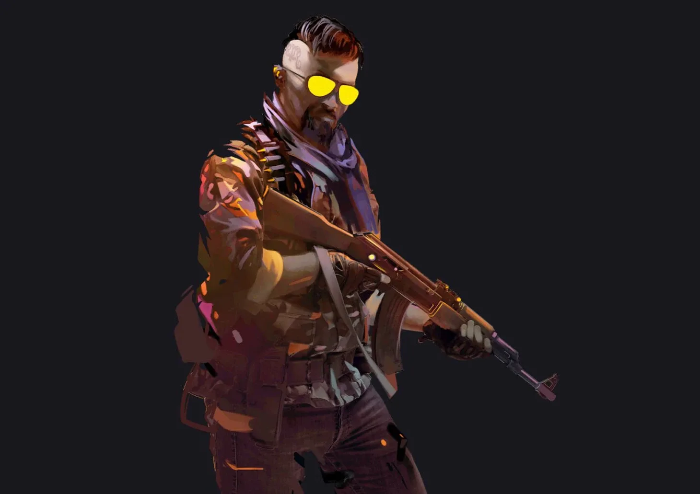

Basic & Sequential Animations (Task 8–10)
CS2 Character Animation (Новое)
Нажми «Start Walk» — персонаж пойдёт слева направо, при движении появляется эффект огня.


Реализовано через jQuery .animate(). Во время движения fire показывается и анимируется (CSS).